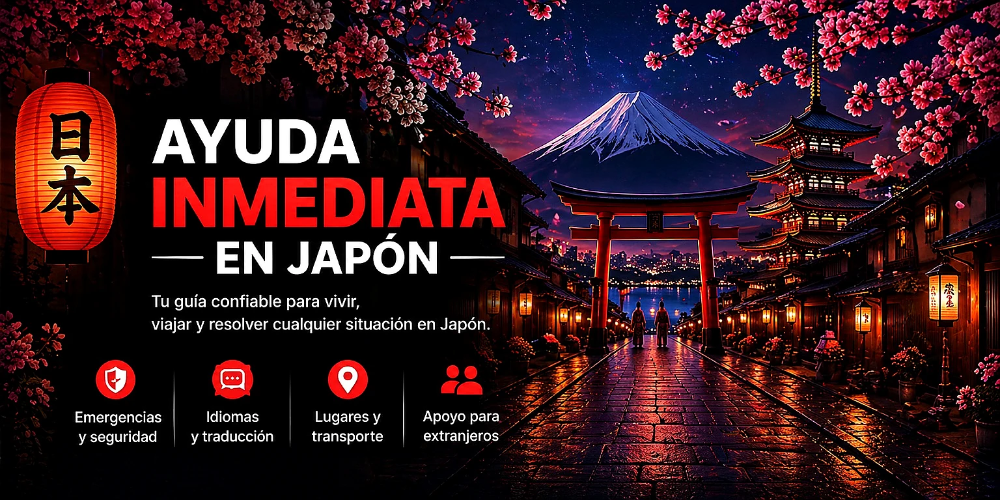

🏰 Tokyo Disneyland
東京ディズニーランド
Parque clásico de Disney en Urayasu, Chiba.
Reserva recomendada Día completo
Organiza tu viaje y encuentra orientación para la vida diaria.
💬 ¿Tienes dudas? Escríbenos.
Te ayudaremos en lo que podamos.
✉️ Escríbenos por correo
ayudainmediataenjapon@gmail.com
🔄 Guía en constante mejora
Descubre Japón, prepara tu viaje y compara opciones para disfrutar más sin gastar de más. Toca una de las tres tarjetas para ver sus subtemas.
Lugares para conocer, recorridos y recomendaciones para visitar Japón.
Compara alternativas gratuitas y de pago, y revisa las condiciones antes de comprar.
El turismo en Japón no es solo visitar lugares bonitos. También significa conocer su cultura, respetar sus costumbres y disfrutar cada lugar con educación, seguridad y consideración hacia las personas que viven aquí.
Los templos y santuarios son lugares turísticos, pero también son espacios de respeto espiritual y cultural. Muchas personas van allí a orar o a participar en tradiciones. Camina con calma, evita gritar, respeta las señales y no entres en zonas prohibidas.
Gracias
ありがとうございます
Arigatō gozaimasu
Disculpe
すみません
Sumimasen
¿Dónde está la estación?
駅はどこですか？
Eki wa doko desu ka?
¿Cuánto cuesta?
いくらですか？
Ikura desu ka?
No entiendo japonés
日本語がわかりません
Nihongo ga wakarimasen
Ayuda, por favor
助けてください
Tasukete kudasai
Explora algunos de los destinos más populares de Japón. Abre cada lugar para ver un video y conocer mejor su ambiente.
Tokio combina rascacielos, trenes, luces, tecnología, compras y barrios famosos como Shibuya, Shinjuku y Asakusa.
Kioto es ideal para ver templos, santuarios, calles antiguas, jardines japoneses y paisajes tradicionales.
Osaka es famosa por su comida callejera, Dotonbori, ambiente alegre y buena conexión con Kioto, Nara y Kobe.
El Monte Fuji es uno de los símbolos más importantes de Japón. Es ideal para fotos, excursiones y paisajes naturales.
Japón cambia mucho según la región y la época del año. Abre una zona para ver una referencia práctica de temperatura, humedad, lluvia y horas de luz. Los valores son orientativos: revisa el pronóstico pocos días antes de viajar.
| Época | Temperatura orientativa | Humedad / ambiente | Luz aproximada |
|---|---|---|---|
| Invierno (dic–feb) | -7 a 2 °C | Frío seco, nieve frecuente | Amanecer ~6:30–7:10 / atardecer ~16:00–17:10 |
| Primavera (mar–may) | -1 a 17 °C | Fresco; sube gradualmente | ~5:50→4:10 / ~17:30→19:00 |
| Verano (jun–ago) | 13 a 26 °C | Más suave que Tokio; días húmedos | ~4:00–4:50 / ~18:20–19:20 |
| Otoño (sep–nov) | 0 a 23 °C | Desciende rápido; primeras nieves posibles | ~5:00→6:30 / ~18:00→16:05 |
| Época | Temperatura orientativa | Humedad / ambiente | Luz aproximada |
|---|---|---|---|
| Invierno | -4 a 8 °C | Frío; nieve importante en varias zonas | ~6:30–6:55 / ~16:15–17:20 |
| Primavera | 2 a 21 °C | Fresco a templado | ~5:50→4:20 / ~17:30→18:50 |
| Verano | 16 a 29 °C | Húmedo y lluvioso por periodos | ~4:10–4:55 / ~18:15–19:05 |
| Otoño | 4 a 26 °C | Templado al inicio y frío al final | ~5:10→6:30 / ~17:55→16:20 |
| Época | Temperatura orientativa | Humedad / ambiente | Luz aproximada |
|---|---|---|---|
| Invierno | 2 a 13 °C | Generalmente seco; noches frías | ~6:30–6:50 / ~16:30–17:30 |
| Primavera | 6 a 24 °C | Variable; días suaves y lluvias | ~6:00→4:30 / ~17:35→18:50 |
| Verano | 20 a 34 °C | Caluroso y muy húmedo | ~4:25–5:10 / ~18:10–19:00 |
| Otoño | 8 a 30 °C | Septiembre puede seguir caluroso; refresca en octubre | ~5:15→6:30 / ~18:00→16:30 |
Atención: Nikkō y las zonas montañosas pueden ser bastante más frías que el centro de Tokio.
| Época | Temperatura orientativa | Humedad / ambiente | Luz aproximada |
|---|---|---|---|
| Invierno | 1 a 13 °C | Frío; nieve posible en montaña y norte de Kansai | ~6:35–7:05 / ~16:45–17:45 |
| Primavera | 5 a 25 °C | Agradable, pero cambiante | ~6:15→4:45 / ~18:00→19:00 |
| Verano | 21 a 35 °C | Muy caluroso y húmedo; temporada de lluvias | ~4:40–5:20 / ~18:20–19:15 |
| Otoño | 7 a 31 °C | Septiembre húmedo; octubre más agradable; noviembre fresco | ~5:30→6:40 / ~18:15→16:45 |
Atención: Takayama, Shirakawa-gō, los Alpes Japoneses y otras zonas altas necesitan ropa más abrigada.
| Época | Temperatura orientativa | Humedad / ambiente | Luz aproximada |
|---|---|---|---|
| Invierno | 3 a 14 °C | Fresco; más suave hacia el sur | ~6:50–7:20 / ~17:00–18:00 |
| Primavera | 7 a 25 °C | Templado y variable | ~6:25→5:00 / ~18:15→19:15 |
| Verano | 22 a 35 °C | Caluroso, húmedo y lluvioso | ~4:55–5:35 / ~18:35–19:30 |
| Otoño | 9 a 31 °C | Cálido al inicio; más fresco en noviembre | ~5:45→6:55 / ~18:30→17:00 |
| Época | Temperatura orientativa | Humedad / ambiente | Luz aproximada |
|---|---|---|---|
| Invierno | 14 a 22 °C | Suave, con viento y humedad | ~7:00–7:20 / ~17:40–18:30 |
| Primavera | 16 a 28 °C | Cálido; aumenta la humedad | ~6:50→5:40 / ~18:30→19:15 |
| Verano | 26 a 33 °C | Muy húmedo; lluvias y tifones posibles | ~5:35–6:05 / ~19:00–19:25 |
| Otoño | 20 a 31 °C | Cálido; temporada de tifones al inicio | ~6:10→6:55 / ~18:45→17:35 |
La mejor estrategia es vestir por capas. Abre la zona que visitarás para ver qué conviene llevar. Si tu ruta pasa por varias regiones, prepara la ropa pensando en la zona más fría.
Invierno: abrigo grueso, ropa térmica, guantes, gorro y calzado para nieve. Primavera/otoño: chaqueta abrigada y capas. Verano: ropa ligera de día y una capa fina para noches o montaña.
Invierno: abrigo o chaqueta cálida. Primavera: manga larga y chaqueta ligera. Verano: ropa fresca y transpirable, sombrero y protección solar. Primeras semanas de octubre: ropa ligera o manga larga durante el día y chaqueta fina para mañanas y noches.
Invierno: abrigo, especialmente para mañanas y noches. Primavera/otoño: capas, manga larga y chaqueta ligera. Verano: ropa muy fresca por el calor y la humedad. En octubre suele ser útil llevar una chaqueta fina aunque el día sea agradable.
Lleva una capa adicional aunque la ciudad de salida esté templada. La temperatura puede bajar rápidamente con la altitud. Son útiles chaqueta cortaviento o impermeable, calzado con buen agarre y, en meses fríos, ropa térmica.
En invierno suele bastar una chaqueta o abrigo medio, aunque depende de la zona. Primavera y otoño permiten capas ligeras. En verano utiliza ropa transpirable y lleva protección para lluvia, sol y humedad.
Predomina la ropa ligera gran parte del año. Añade una chaqueta fina para invierno, viento, aire acondicionado o noches frescas. En meses cálidos son importantes sombrero, protección solar, ropa fresca y una prenda impermeable.
Las atracciones están divididas por categorías para que puedas encontrar rápidamente lo que te interesa. Abre una categoría y después revisa cada lugar, su duración aproximada, reservas y enlaces.
Puedes comprar o reservar utilizando cualquiera de los enlaces disponibles. Te recomendamos comparar precios, condiciones y disponibilidad para elegir la opción que más te convenga.
Ver opciones de reservaLos parques más conocidos y recomendados. Conviene comprar entradas con anticipación y revisar restricciones, horarios y sistemas de acceso.
Parque clásico de Disney en Urayasu, Chiba.
Reserva recomendada Día completoParque exclusivo de Japón con áreas inspiradas en puertos y aventuras marítimas.
Reserva recomendada Día completoParque temático en Osaka con áreas y atracciones de películas y personajes populares.
Comprar antes Día completoParque de Studio Ghibli en la prefectura de Aichi. Las áreas están distribuidas dentro del parque conmemorativo de Aichi.
Reserva necesaria Día completoParque temático en Nagoya especialmente recomendado para familias con niños.
Comprar antes Día completo Ideal para familiasArte digital, animación y experiencias que requieren una visita planificada. Algunas entradas se agotan con anticipación.
Museo de arte digital inmersivo en Azabudai Hills, Tokio. Las obras se conectan y cambian mientras recorres el lugar.
Reserva recomendada 2 a 4 horasExperiencia inmersiva en Toyosu con agua, luces, flores, espejos y espacios que se recorren descalzo.
Reserva recomendada 2 a 3 horasExperiencia permanente de arte digital en Kioto con instalaciones inmersivas e interactivas.
Reserva recomendada 2 a 4 horasExperiencia nocturna al aire libre dentro del Jardín Botánico Nagai, con luz, sonido, naturaleza y arte digital.
Reserva recomendada 1 a 2 horasMuseo interactivo en Fukuoka con animales digitales, descubrimiento y actividades físicas.
Reserva recomendada 2 a 3 horasMuseo en Mitaka, Tokio. Es diferente de Ghibli Park y exige entrada con fecha determinada.
Reserva obligatoria 2 a 4 horasJapón tiene muchos acuarios regionales. Esta selección reúne algunos de los más conocidos, completos y fáciles de incluir en una ruta turística.
Uno de los acuarios más conocidos de Japón, famoso por su gran tanque central y el tiburón ballena.
Reserva útil 3 a 4 horas OsakaAcuario moderno cerca de la estación Shinagawa, conocido por sus espectáculos, iluminación y presentaciones acuáticas.
2 a 3 horas Fácil acceso TokioAcuario dentro de Tokyo Skytree Town, recomendable para combinar con Asakusa y Skytree.
2 a 3 horas Familias TokioAcuario urbano en Ikebukuro, conocido por sus exhibiciones exteriores y su ambiente panorámico.
2 a 3 horas Ikebukuro TokioGran acuario de Nagoya con dos edificios, delfines, belugas y amplias exhibiciones marinas.
Medio día Nagoya Muy completoAcuario frente al mar que puede combinarse con una excursión a Kamakura y Enoshima.
2 a 4 horas Kanagawa Excursión desde TokioUno de los acuarios más famosos de Japón, conocido por su enorme tanque y tiburones ballena.
Medio día Okinawa Planificar transporteAcuario compacto situado frente a LEGOLAND Japan. Es práctico para familias que visitan ambos lugares.
1 a 2 horas Nagoya Ideal con LEGOLANDCastillos y espacios históricos especialmente recomendados por su arquitectura, conservación o importancia cultural.
Uno de los castillos originales mejor conservados de Japón y Patrimonio Mundial.
Medio día Hyogo Muy recomendadoCastillo reconstruido con museo interior y un gran parque urbano.
2 a 4 horas OsakaCastillo original a orillas del lago Biwa, con jardines y ambiente histórico.
2 a 4 horas Shiga Castillo originalCastillo original de color negro rodeado de montañas en Nagano.
2 a 4 horas Nagano Castillo originalImportante símbolo de Nagoya, conocido por sus shachihoko dorados.
2 a 4 horas NagoyaMuseo, monumentos y Cúpula de la Bomba Atómica. Una visita histórica y de reflexión.
Medio día HiroshimaAlgunos de los lugares religiosos e históricos más conocidos. Recuerda mantener una conducta respetuosa y seguir las señales.
Templo histórico de Tokio, Kaminarimon y calle comercial Nakamise.
2 a 4 horas TokioSantuario de Kioto famoso por sus miles de torii rojos y rutas por la montaña.
2 a 4 horas KiotoTemplo emblemático de Kioto junto a las calles tradicionales de Higashiyama.
Medio día KiotoGran Buda, patrimonio histórico y ciervos en el parque de Nara.
Medio día o día completo NaraIsla conocida por su gran torii, el santuario sobre el agua y sus paisajes.
Medio día o día completo HiroshimaSantuario ricamente decorado dentro del conjunto histórico de Nikkō.
Día completo desde Tokio TochigiMontañas, lagos, bosques y pueblos tradicionales para quienes desean salir de las grandes ciudades.
Vistas del Monte Fuji, lago, miradores y naturaleza. La visibilidad depende del clima.
Día completo Yamanashi Revisar climaBosque de bambú, puente Togetsukyō, templos y paisajes junto al río.
Medio día KiotoPueblo histórico de montaña famoso por sus casas tradicionales gasshō-zukuri.
Día completo Gifu Planificar autobúsValle alpino de Nagano con senderos, ríos y montañas. El acceso es estacional.
Día completo Nagano Acceso estacionalPaisaje natural de Nikkō con cascada, lago y rutas panorámicas.
Día completo NikkōZona de montañas, onsen, lago Ashi y vistas ocasionales del Monte Fuji.
Día completo o una noche KanagawaJardines destacados por su diseño, paisaje o valor estacional. La experiencia cambia según la época del año.
Uno de los jardines paisajísticos más famosos de Japón, junto al castillo de Kanazawa.
2 a 3 horas IshikawaJardín histórico con amplios jardines, estanques y vistas hacia el castillo de Okayama.
2 a 3 horas OkayamaGran jardín tradicional de Shikoku con estanques, puentes y pinos cuidadosamente mantenidos.
2 a 4 horas KagawaAmplio jardín botánico con invernaderos y flores estacionales, práctico desde el centro de Kioto.
2 a 4 horas KiotoJardín botánico urbano que también alberga la experiencia nocturna teamLab Botanical Garden.
2 a 3 horas OsakaMiradores populares para contemplar las ciudades desde lo alto. Algunos requieren reserva por horario.
Mirador abierto sobre Shibuya con vistas panorámicas de Tokio.
Reserva recomendada 1 a 2 horas TokioLa torre más alta de Japón, junto a Solamachi y Sumida Aquarium.
Reserva útil 2 a 3 horas TokioTorre emblemática de Tokio con observatorios y vistas urbanas.
1 a 2 horas TokioMirador circular en Osaka, especialmente atractivo al atardecer y de noche.
1 a 2 horas OsakaObservatorio elevado en Tennoji con amplias vistas de Osaka.
1 a 2 horas OsakaMirador de montaña conocido por sus vistas nocturnas de Sapporo.
2 a 3 horas HokkaidoZonas populares para pasear, comer, comprar y conocer el ambiente de las principales ciudades.
Luces, carteles, comida callejera y ambiente nocturno en el centro de Osaka.
2 a 3 horas OsakaCruce de Shibuya, centros comerciales, miradores y vida urbana de Tokio.
2 a 4 horas TokioRascacielos, tiendas, restaurantes, parques y vida nocturna.
Medio día TokioDistrito de compras, arquitectura y restaurantes en el centro de Tokio.
2 a 4 horas TokioBarrio tradicional de Kioto con calles históricas, casas de té y ambiente nocturno.
2 a 3 horas Kioto Respetar zonas privadasEstas rutas están organizadas para comenzar en una ciudad y terminar en otra. Así el turista puede avanzar por Japón sin perder tiempo regresando nuevamente al punto de llegada.
Los requisitos, tasas y procedimientos migratorios pueden cambiar. Antes de viajar comprueba siempre la información oficial correspondiente a tu nacionalidad y lugar de residencia.
Desde el 1 de julio de 2026, las tasas generales de expedición de visas japonesas fueron modificadas. La tasa aplicable puede variar según el tipo de visa, nacionalidad, país donde se realiza la solicitud y posibles exenciones.
Última revisión general de esta guía: octubre de 2026.
Antes de comprar vuelos no reembolsables, comprueba qué requisitos corresponden a tu nacionalidad.
Japón mantiene acuerdos de exención de visa para estancias cortas con numerosos países y regiones. Las condiciones no son iguales para todas las nacionalidades.
🔎 Comprobar países y regiones exentos de visaLos documentos dependen de tu nacionalidad, residencia y circunstancias particulares.
Entre los documentos que pueden solicitarse se encuentran:
Japón modificó sus tasas generales de expedición de visas desde julio de 2026.
Cuando una solicitud no presenta problemas, el procedimiento puede completarse en pocos días laborables. Sin embargo, cuando se requieren comprobaciones adicionales puede tardar considerablemente más.
JAPAN eVISA permite realizar electrónicamente determinadas solicitudes de visa turística.
Cuando corresponda, sigue las instrucciones oficiales para mostrar el Visa Issuance Notice. No dependas únicamente de una captura de pantalla si las instrucciones requieren mostrarlo mediante el sistema oficial.
💻 JAPAN eVISA oficialVisit Japan Web permite preparar determinados procedimientos relacionados con la entrada a Japón.
El presupuesto dependerá principalmente de la temporada, alojamiento, ciudades visitadas, transporte, comidas y actividades.
| Estilo | Alojamiento | Comida | Gasto local | Total diario |
|---|---|---|---|---|
| 🎒 Económico | ¥4.000–¥8.000 | ¥2.000–¥3.500 | ¥2.000–¥4.000 | ¥8.000–¥15.500 |
| 🧳 Medio | ¥8.000–¥15.000 | ¥3.500–¥6.000 | ¥3.000–¥6.000 | ¥14.500–¥27.000 |
| ✨ Cómodo | ¥15.000+ | ¥6.000+ | ¥5.000+ | ¥26.000+ |
| Duración | Económico | Medio |
|---|---|---|
| 7 días | ¥56.000–¥108.500 | ¥101.500–¥189.000 |
| 10 días | ¥80.000–¥155.000 | ¥145.000–¥270.000 |
| 14 días | ¥112.000–¥217.000 | ¥203.000–¥378.000 |
Es recomendable disponer de un seguro adecuado antes de viajar a Japón.
Guarda el número de asistencia de tu aseguradora y averigua qué procedimiento debes seguir si necesitas atención médica.
🛡️ Información sobre seguro de viaje — JNTO ❤️ Continuar a SaludUn medicamento permitido en tu país no necesariamente puede introducirse en Japón bajo las mismas condiciones.
Para muchos medicamentos ordinarios de uso personal existen cantidades que pueden introducirse sin realizar determinados trámites previos, siempre que se cumplan las condiciones establecidas.
Tener conexión desde la llegada facilita el uso de mapas, traducción, reservas y transporte.
Es conveniente viajar con más de una forma de pago. Aunque las tarjetas son ampliamente aceptadas, todavía existen situaciones donde necesitarás efectivo.
Para cajeros, cambio de moneda, problemas con tarjetas y otras situaciones, utiliza nuestra sección completa de Dinero.
💴 Continuar a DineroAntes de elegir únicamente por precio, comprueba la ubicación y las condiciones de la reserva.
No repetiremos aquí cómo utilizar trenes, metro, autobuses y taxis porque esa información ya está desarrollada en Transporte.
En Japón existen servicios de envío de equipaje entre numerosos aeropuertos, hoteles y otros puntos. También encontrarás lockers en muchas estaciones.
Japón utiliza una tensión eléctrica de 100 voltios.
Los enchufes más comunes son tipo A, con dos clavijas planas, similares a los utilizados en Estados Unidos.
También puede encontrarse el tipo B con toma de tierra, pero no debes asumir que estará disponible en todos los alojamientos o lugares.
El clima cambia considerablemente según la estación y la región de Japón.
Para evitar repetir información, en Turismo encontrarás nuestra guía sobre clima, horas de luz y qué ropa llevar.
🌸 Ver clima y qué ropa llevarAntes de cerrar la maleta, realiza una última comprobación.
A partir de ahí continúa con nuestra sección Llegada a Japón, donde encontrarás la orientación para los primeros pasos después de aterrizar.
🛬 Continuar: Llegada a JapónElige primero qué necesitas. Después abre la empresa que quieras consultar y compara sus opciones.
Excursiones, visitas guiadas, recorridos de un día y tours por ciudades y destinos de Japón.
Actividades, excursiones, entradas y visitas guiadas.
Ver tours en GetYourGuideTours, excursiones y visitas guiadas en distintos destinos de Japón.
Parques, miradores, museos y atracciones populares. Elige primero la empresa y después la atracción.
Entradas para atracciones y lugares populares de Japón.
Experiencias culturales, gastronómicas, entretenimiento y otras actividades para complementar tu viaje.
Experiencias, actividades y opciones para disfrutar Japón de una manera diferente.
Ver actividades en GetYourGuideAfiliación en proceso de verificación. La activaremos aquí cuando el enlace esté disponible.
Aquí aparecerá cada plataforma por separado cuando tengamos sus enlaces activos.
Aquí aparecerá cada empresa por separado cuando tengamos sus enlaces activos.
Billetes y traslados que ya tenemos disponibles.
Aquí aparecerá cada proveedor por separado cuando tengamos sus enlaces activos.
Aquí aparecerá cada aseguradora o plataforma por separado cuando tengamos sus enlaces activos.
¿No encontraste lo que buscabas?
Estamos aquí para ayudarte.
🙏 Gracias por utilizar esta guía
Si esta guía te resultó útil, puedes apoyarla con una pequeña colaboración. Tu ayuda permite mantener esta información gratuita y disponible para más personas que la necesitan.
Incluso una pequeña colaboración ayuda a mantener esta guía gratuita y disponible para más personas.
Sí. Los residentes normalmente deben inscribirse en el seguro nacional o estar cubiertos por Shakai Hoken.
Debes acudir a la policía y posteriormente contactar con tu embajada o consulado.
Sí. La mayor parte del contenido y orientación básica es gratuita.
🙏 Si esta información te fue útil, puedes apoyar este proyecto:
📌 Cómo guardar esta página
iPhone / iPad:
Pulsa Compartir → Añadir a pantalla de inicio.
Android:
Menú ⋮ → Añadir a pantalla de inicio.
Computadora:
Presiona Ctrl + D o usa la estrella ⭐.